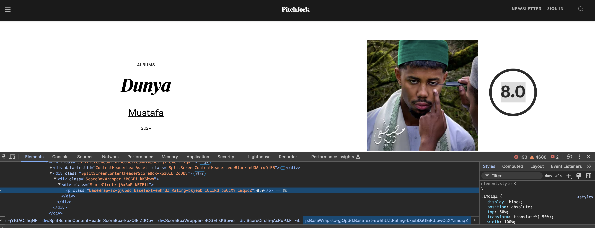

Extracting Data From HTML#
OBJECTIVES
Use
pd.read_htmlto extract data from website tablesUse
bs4to parse html returned with requests.
Reading in Data from HTML Tables#
Now, we turn to one more approach in accessing data. As we’ve seen, you may have json or csv when querying a data API. Alternatively, you may receive HTML data where information is contained in tags. Below, we examine some basic html tags and their effects.
<h1>A Heading</h1>
<p>A first paragraph</p>
<p>A second paragraph</p>
<table>
<tr>
<th>Album</th>
<th>Rating</th>
</tr>
<tr>
<td>Pink Panther</td>
<td>10</td>
</tr>
</table>
import numpy as np
import pandas as pd
import matplotlib.pyplot as plt
import seaborn as sns
import requests
html = '''
<h1>A Heading</h1>
<p>A first paragraph</p>
<p>A second paragraph</p>
<table>
<tr>
<th>Album</th>
<th>Rating</th>
</tr>
<tr>
<td>Pink Panther</td>
<td>10</td>
</tr>
</table>
'''
from IPython.display import HTML
HTML(html)
A Heading
A first paragraph
A second paragraph
| Album | Rating |
|---|---|
| Pink Panther | 10 |
Making a request of a url#
Let’s begin with some basketball information from basketball-reference.com:
The tables on the page will be picked up (hopefully!) by the read_html function in pandas.
#visit the url below
url = 'https://www.basketball-reference.com/wnba'
#assign the results as data
#read_html
wnba = pd.read_html(url)
#what kind of object is data?
type(wnba)
list
#first element?
wnba[0]
| Team | W | L | W/L% | GB | |
|---|---|---|---|---|---|
| 0 | Minnesota Lynx* | 34 | 10 | 0.773 | — |
| 1 | Las Vegas Aces* | 30 | 14 | 0.682 | 4.0 |
| 2 | Atlanta Dream* | 30 | 14 | 0.682 | 4.0 |
| 3 | Phoenix Mercury* | 27 | 17 | 0.614 | 7.0 |
| 4 | New York Liberty* | 27 | 17 | 0.614 | 7.0 |
| 5 | Indiana Fever* | 24 | 20 | 0.545 | 10.0 |
| 6 | Seattle Storm* | 23 | 21 | 0.523 | 11.0 |
| 7 | Golden State Valkyries* | 23 | 21 | 0.523 | 11.0 |
| 8 | Los Angeles Sparks | 21 | 23 | 0.477 | 13.0 |
| 9 | Washington Mystics | 16 | 28 | 0.364 | 18.0 |
| 10 | Connecticut Sun | 11 | 33 | 0.250 | 23.0 |
| 11 | Chicago Sky | 10 | 34 | 0.227 | 24.0 |
| 12 | Dallas Wings | 10 | 34 | 0.227 | 24.0 |
#examine information
wnba[0].info()
<class 'pandas.core.frame.DataFrame'>
RangeIndex: 13 entries, 0 to 12
Data columns (total 5 columns):
# Column Non-Null Count Dtype
--- ------ -------------- -----
0 Team 13 non-null object
1 W 13 non-null int64
2 L 13 non-null int64
3 W/L% 13 non-null float64
4 GB 13 non-null object
dtypes: float64(1), int64(2), object(2)
memory usage: 652.0+ bytes
#last dataframe?
wnba[-1]
| Unnamed: 0 | PTS | TRB | AST | GmSc | |
|---|---|---|---|---|---|
| 0 | A'ja Wilson (LVA) | 31 | 9 | 4 | 25.1 |
| 1 | Jackie Young (LVA) | 18 | 7 | 8 | 17.3 |
| 2 | Kahleah Copper (PHO) | 30 | 6 | 1 | 16.5 |
| 3 | Chelsea Gray (LVA) | 18 | 4 | 4 | 15.7 |
| 4 | Alyssa Thomas (PHO) | 17 | 12 | 10 | 13.7 |
Scraping the Web for Data#
Sometimes the data is not formatted as an html table or pd.read_html simply doesn’t work. In these situations you can use the bs4 library and its BeautifulSoup object to parse HTML tags and extract information. First, make sure you have the library installed and can import it below.
# pip install -U bs4
from bs4 import BeautifulSoup
import requests
sample_html = '''
<h1>Music Reviews</h1>
<p>This album was awful. <strong>Score</strong>: <i class = "score">2</i></p>
<p class = "good">This album was great. <strong>Score</strong>: <i class = "score">8</i></p>
'''
# create a soup object
soup = BeautifulSoup(sample_html)
# examine the soup
soup
<html><body><h1>Music Reviews</h1>
<p>This album was awful. <strong>Score</strong>: <i class="score">2</i></p>
<p class="good">This album was great. <strong>Score</strong>: <i class="score">8</i></p>
</body></html>
# find the <p> tags
soup.find('p')
<p>This album was awful. <strong>Score</strong>: <i class="score">2</i></p>
# find the i tag
soup.find('i')
<i class="score">2</i>
# find all the i tags
soup.find_all('i')
[<i class="score">2</i>, <i class="score">8</i>]
# find all good paragraphs
soup.find('p', {'class': 'good'})
<p class="good">This album was great. <strong>Score</strong>: <i class="score">8</i></p>
Extracting Data from a URL#
Make a request.
Turn the request into soup!
url = 'https://pitchfork.com/reviews/albums/'
#make a request
r = requests.get(url)
r
<Response [200]>
#examine the text
r.text[:1000]
'<!DOCTYPE html><html lang="en-US" dir="ltr"><head><title>New Albums & Music Reviews | Pitchfork</title><meta charSet="utf-8"/><meta content="IE=edge" http-equiv="X-UA-Compatible"/><meta name="msapplication-tap-highlight" content="no"/><meta name="viewport" content="width=device-width, initial-scale=1"/><meta name="author" content="Condé Nast"/><meta name="copyright" content="Copyright (c) Condé Nast 2026"/><meta name="description" content="Daily reviews of every important album in music"/><meta name="id" content="65ce02a52126d093a5f585e1"/><meta name="keywords" content="web"/><meta name="news_keywords" content="web"/><meta name="robots" content="index, follow, max-image-preview:large"/><meta name="content-type" content="bundle"/><meta name="parsely-post-id" content="65ce02a52126d093a5f585e1"/><meta name="parsely-metadata" content="{"description":"Daily reviews of every important album in music","image-16-9":"https://media.pitchfork.com/photos/5935'
#turn it into soup!
soup = BeautifulSoup(r.text)
Using Inspect#
You can inspect an items HTML code by right clicking on the item of interest and selecting inspect. Here, you will see the html tags that surround the object of interest.
Right clicking on the image of the album cover and choosing inspect showed:

#find the img tag
#extract the url
#find all img tags
#explore attributes
#extract source of image url
# extract the genre tags
# extract the text from the genres
#[i.text for i in genres]
Problem#
Head over to Quotes to Scrape and use requests and BeautifulSoup to extract and structure the quotes as a DataFrame similar to that below:
quote |
author |
tags |
|---|---|---|
The world as we have created it is a process of our thinking. It cannot be changed without changing our thinking |
Albert Einstein |
[change ,deep-thoughts, thinking, world] |
url = 'https://quotes.toscrape.com/'
r = requests.get(url)
Problems#
Some practice problems on using API’s and some basic webscraping can be found here. Please head over to the notebook, grab a partner, and get to work.